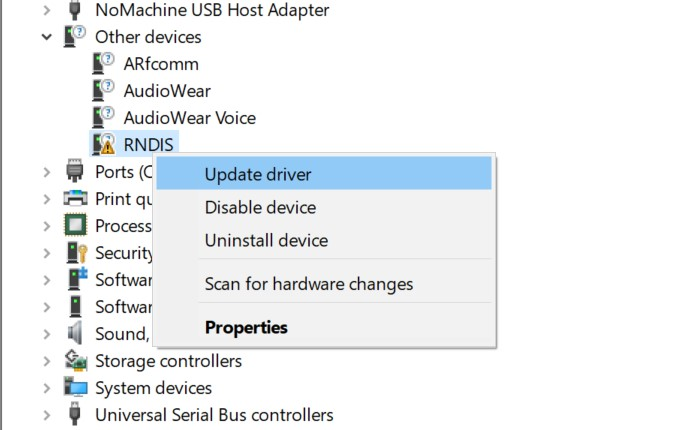
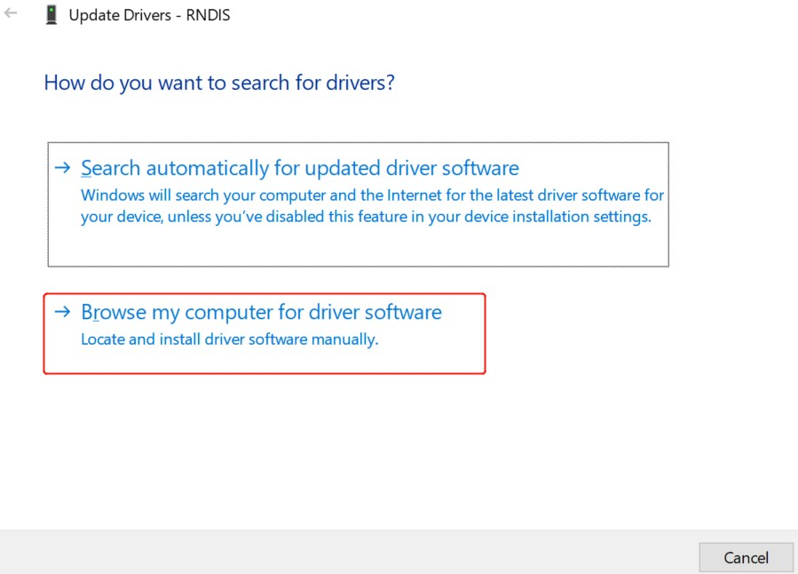
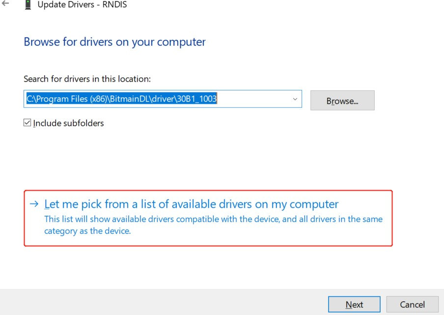
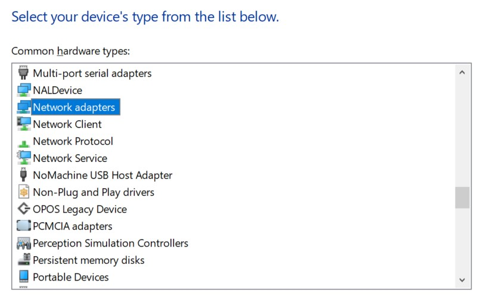

3. USBOperation Guide¶
3.1. Preparation¶
USB 2.0 Host/DeviceofPreparationas follows:
U-boot and Linux KernelUseSDK ofU-boot and Kernel。
FileSystemCanUse FileSystemext4orsquashfs， CanUseNFS。
Shell script“run_usb.sh”. run_usb.shUseKernelofUSB ConfigFSFunction USB device .Use canRefer toandModifyrun_usb.sh PID/VIDandfunctionofRelated . OperationcanRefer toKernelFile” linux/Documentation/usb/gadget_configfs.txt”。
3.2. UbootOperation Procedure¶
3.2.1. UbootunderUSB HostConfiguration¶
Ubootunder SupportU and Device. USB hostinubootDefaultisDisable，mustEnableRelatedconfig。
Steps1. EnableubootunderUSBRelatedofDriver:
inBoard-level U-Boot Configuration FileinEnableunder Option。Configuration FilePathusually build/boards/cv184x/Board Name/u-boot/cvitek_Board Name_defconfig 。
PleasewillPathinof Board Name ReplaceisActualBoard-levelDirectory Name（for example cv1842hp_wevb_0014a_emmc）， with SDK is 。
CONFIG_USB=y
CONFIG_DM_USB=y
CONFIG_USB_STORAGE=y
CONFIG_CMD_USB=y
Ifneed of USB DWC2 （Optional），canin defconfig in ：
CONFIG_USB_DWC2_VERBOSE_DEBUG=y
3.2.2. UbootunderU ¶
Uboot USB Hostbeforeof ：
UbootunderUSB HostnotSupport ，mustin USB hostbefore onDevice. Ifon the platform USB Hub，mustConfirmHub alreadyEnable，USBPathofSwitch toHost connector。
withcv184xas an example（ cv181x）：
on the platform ， ubootCommand Line，InputCommands: usb start， Success。
cv184x# usb start
starting USB...
Bus usb@04340000: USB DWC2
scanning bus usb@04340000 for devices... 3 USB Device(s) found
scanning usb for storage devices... 1 Storage Device(s) found
Ifusb startafter or toDevice，caninubootCommand LineExecutesetenv usb_pgood_delay XXX，can or in HubofDevice timeoutValue， Value is1000-3000。
Completeafter， InputCommands: usb tree，View andRate。followingExample USB host Hub and Mass Storage Device。
cv184x# usb tree
USB device tree:
1 Hub (480 Mb/s, 0mA)
| U-Boot Root Hub
|
+-2 Hub (480 Mb/s, 100mA)
|
+-3 Mass Storage (480 Mb/s, 500mA)
Prolific Technology Inc. USB SD Card Reader ABCDEF0123456789AB
canExecute usb storage View before of USB Device ：
cv184x# usb storage
Device 0: Vendor: Rev: 1.00 Prod: SD Card Reader
Type: Removable Hard Disk
Capacity: 960.0 MB = 0.9 GB (1966080 x 512)
Initializeand ：
Completeaftercan followingOperation。
Steps1. ViewDeviceInformation
Command LineExecute:
usb infocan Controlleron Device；Executeusb info [dev]canView Device Number 。
cv184x# usb info
1: Hub, USB Revision 1.10
- U-Boot Root Hub
- Class: Hub
- PacketSize: 8 Configurations: 1
- Vendor: 0x0000 Product 0x0000 Version 0.0
Configuration: 1
- Interfaces: 1 Self Powered 0mA
Interface: 0
- Alternate Setting 0, Endpoints: 1
- Class Hub
- Endpoint 1 In Interrupt MaxPacket 2 Interval 255ms
2: Hub, USB Revision 2.0
- Class: Hub
- PacketSize: 64 Configurations: 1
- Vendor: 0x058f Product 0x6254 Version 1.0
Configuration: 1
- Interfaces: 1 Self Powered Remote Wakeup 100mA
Interface: 0
- Alternate Setting 0, Endpoints: 1
- Class Hub
- Endpoint 1 In Interrupt MaxPacket 1 Interval 12ms
3: Mass Storage, USB Revision 2.10
- Prolific Technology Inc. USB SD Card Reader ABCDEF0123456789AB
- Class: (from Interface) Mass Storage
- PacketSize: 64 Configurations: 1
- Vendor: 0x067b Product 0x2731 Version 1.0
Configuration: 1
- Interfaces: 1 Bus Powered 500mA
Interface: 0
- Alternate Setting 0, Endpoints: 2
- Class Mass Storage, Transp. SCSI, Bulk only
- Endpoint 1 Out Bulk MaxPacket 512
- Endpoint 2 In Bulk MaxPacket 512
Steps2. FAT FileSystem andWrite（Optional）
If U Partitionis FAT，canUse
fatlsFile、fatwriteWriteFile。DeviceandPartition Please Actual Modify（under isusb 0Partition1）。
cv184x# fatls usb 0:1 /
System Volume Information/
2552840 boot.emmc
9887872 cfg.emmc
53395776 data.emmc
555520 fip.bin
temp/
555520 fip_spl.bin
991 partition_emmc.xml
3593016 ramboot.itb
5963904 rootfs.emmc
4919424 system.emmc
811136 yoc.bin
2627628 boot.spinor
1048704 data.spinor
959 partition_spinor.xml
2240512 rootfs.spinor
7712 run_usb.sh
1048576 test.bin
16 file(s), 2 dir(s)
cv184x# fatwrite usb 0:1 0x80000000 test2.bin 0x100000
1048576 bytes written in 369 ms (2.7 MiB/s)
cv184x# fatls usb 0:1 /
System Volume Information/
2552840 boot.emmc
9887872 cfg.emmc
53395776 data.emmc
555520 fip.bin
temp/
555520 fip_spl.bin
991 partition_emmc.xml
3593016 ramboot.itb
5963904 rootfs.emmc
4919424 system.emmc
811136 yoc.bin
2627628 boot.spinor
1048704 data.spinor
959 partition_spinor.xml
2240512 rootfs.spinor
7712 run_usb.sh
1048576 test.bin
1048576 test2.bin
17 file(s), 2 dir(s)
Steps3. U Operation（FAT）
Partitionis FAT ，canUse
fatloadwillFile Memory：fatload usb dev:part loadaddr filename。dev、Partition、loadaddr、filenamePlease Actual Modify， for exampleunder：
cv184x# fatload usb 0:1 0x82000000 boot.spinor
2627628 bytes read in 272 ms (9.2 MiB/s)
Steps4. U Operation（FAT）
Partitionis FAT ，canUse
fatwritefromMemoryWriteFile：fatwrite usb dev:part addr filename bytes。 for exampleunder（andSteps 2 infatwrite）：
cv184x# fatwrite usb 0:1 0x80000000 test2.bin 0x100000
1048576 bytes written in 369 ms (2.7 MiB/s)
3.3. linux Host¶
3.3.1. USB 2.0 Host Operation Procedure¶
- Steps1. Kernel Configuration
Enable USB Host and U RelatedConfiguration。Configuration FilePathusually
build/boards/cv184x/Board Name/linux/Board Name_defconfig。CONFIG_USB_SUPPORT=y CONFIG_USB=y CONFIG_USB_DWC2=y CONFIG_USB_GADGET=y CONFIG_USB_CONFIGFS=y CONFIG_USB_LIBCOMPOSITE=y CONFIG_USB_ROLE_SWITCH=y CONFIG_SCSI=y CONFIG_BLK_DEV_SD=y CONFIG_USB_STORAGE=y
Steps2. is Host Mode
IfBoard-levelThrough GPIO USB or Host/Device ，Please Operation GPIO。 Examplein Q3 、 Q4 ，and R127、R125。 for exampleUse GPIO 450 Enable USB ，Set the level high or low according to the actual situation。
echo 450 > /sys/class/gpio/export echo out > /sys/class/gpio/gpio450/direction echo 1 > /sys/class/gpio/gpio450/valuewill OTG Controller to Host Mode:
echo host > /proc/cviusb/otg_role
- Steps3. U
will U USB ， Success。 underSerial Port :
[ 72.061964] usb 1-1: new high-speed USB device number 2 using dwc2 [ 72.315816] usb-storage 1-1:1.0: USB Mass Storage device detected [ 72.335934] scsi host0: usb-storage 1-1:1.0 [ 73.363027] scsi 0:0:0:0: Direct-Access Generic STORAGE DEVICE 1532 PQ: 0 ANSI: 6 [ 73.374407] sd 0:0:0:0: Attached scsi generic sg0 type 0 [ 73.558597] sd 0:0:0:0: [sda] 30253056 512-byte logical blocks: (15.5 GB/14.4 GiB) [ 73.566961] sd 0:0:0:0: [sda] Write Protect is off [ 73.571922] sd 0:0:0:0: [sda] Mode Sense: 21 00 00 00 [ 73.577899] sd 0:0:0:0: [sda] Write cache: disabled, read cache: enabled, doesn't support DPO or FUA [ 73.593961] sda: sda1 [ 73.602607] sd 0:0:0:0: [sda] Attached SCSI removable disk
sdXY in X is ，Y isPartition ，Please Actual Modify。for example log in sda1 Indicates U Partition； Partition sda1、sda2、sda3 etc.。
- Steps4. ViewPartitionInformation
Run
ls /devViewDeviceNode:If sdXY（If sda1），Indicates Partition，need
fdisk /dev/sdaPartitionafter 。If sdXY，Indicatesalready to U Partition，can andRead/write。
CommonCommandsDescription:
PartitionOperationDevicethe node is sdX，Example:
fdisk /dev/sdaPartition sdXY（If FAT32）:
mkdosfs -F 32 /dev/sda1Partition sdXY:
mount /dev/sda1 /mnt
- Steps5. U
PartitiontoContents（with sda1 to /mnt as an example）:
mount /dev/sda1 /mnt
- Steps6. U Read/writeOperation
after can ContentsRead/write，for example:
# View U Content ls /mnt # from U Copyto beforeContents（ ） cp /mnt/auto.sh ./ # from beforeContentsCopyto U （ ） cp ./data.bin /mnt/ # Use after andUninstall sync umount /mnt
3.4. linux Device¶
3.4.1. Preparation¶
Use USB Device before，needinDevice TreeinEnsure USB Controlleris OTG Mode。inBoard-level DTS FileinThrough usb Node，will dr_mode Settingsis "otg"。
DTS Pathusually build/boards/cv184x/Board Name/dts_arm/Board Name.dts。inFileinAddorConfirmas follows Node:
&usb {
dr_mode = "otg";
};
ModifyafterRebuildDevice TreeandBurning 。
3.4.2. Switch GPIO¶
EVB， Through switch IC Host and Device Channel，Use USB beforeneed Operation GPIO。Set the level high or low according to the actual situation。
echo 450 > /sys/class/gpio/export
echo out > /sys/class/gpio/gpio450/direction
echo 0 > /sys/class/gpio/gpio450/value
3.4.3. Device is DeviceofOperation Guide¶
Kernel Configuration Enable USB Device and Mass Storage RelatedConfiguration，for example:
CONFIG_USB_SUPPORT=y CONFIG_USB=y CONFIG_USB_DWC2=y CONFIG_USB_GADGET=y CONFIG_USB_CONFIGFS=y CONFIG_USB_LIBCOMPOSITE=y CONFIG_USB_ROLE_SWITCH=y CONFIG_USB_F_MASS_STORAGE=y CONFIG_USB_CONFIGFS_MASS_STORAGE=y
Switch to Device Mode
Refer to this chapter Switch GPIO subsectionOperation GPIO。
Switch the OTG controller to Device mode:
echo device > /proc/cviusb/otg_role
RunScript run_usb.sh The script is on the board
/etcdirectory:/etc/run_usb.sh probe msc /dev/mmcblk0p1 /etc/run_usb.sh start
mmcblkXY Indicates X （eMMC or SD）of Y Partition，Please Actual Select。
Connect the USB cable Through USB Connect the platform to Host ，Host canwillPlatform is USB Device，andin
/devunderGenerate DeviceNode。
3.4.4. Device isTerminalDeviceofOperation Guide¶
Kernel Configuration Enable USB Device and ACM/Serial RelatedConfiguration，for example:
CONFIG_USB_SUPPORT=y CONFIG_USB=y CONFIG_USB_DWC2=y CONFIG_USB_GADGET=y CONFIG_USB_CONFIGFS=y CONFIG_USB_LIBCOMPOSITE=y CONFIG_USB_ROLE_SWITCH=y CONFIG_USB_F_ACM=y CONFIG_USB_CONFIGFS_ACM=y CONFIG_USB_G_SERIAL=y CONFIG_USB_U_SERIAL=y CONFIG_USB_F_SERIAL=y CONFIG_USB_CONFIGFS_SERIAL=y
Switch to Device Mode
Refer to this chapter Switch GPIO subsection。
Switch the OTG controller to Device mode:
echo device > /proc/cviusb/otg_role
RunScript run_usb.sh The script is on the board
/etcdirectory:/etc/run_usb.sh probe acm /etc/run_usb.sh start
Connect the USB cable Through USB Connect the platform to Host ，Host can is USB TerminalDevice，andGenerateDeviceNode ttyACMX（X is TypeTerminal ）。Device
/devunder Generate ttyGSY（Y is TypeTerminal ）。Host and Device canThroughTerminalDevice Data 。
3.4.5. Device is ADB DeviceofOperation Guide¶
Kernel Configuration Enable USB Device and FunctionFS RelatedConfiguration，for example:
CONFIG_USB_SUPPORT=y CONFIG_USB=y CONFIG_USB_DWC2=y CONFIG_USB_GADGET=y CONFIG_USB_CONFIGFS=y CONFIG_USB_LIBCOMPOSITE=y CONFIG_USB_ROLE_SWITCH=y CONFIG_USB_F_FS=y CONFIG_USB_CONFIGFS_FS=y
Switch to Device Mode
Refer to this chapter Switch GPIO subsection。
Switch the OTG controller to Device mode:
echo device > /proc/cviusb/otg_role
RunScript run_usb.sh and adbd The script is on the board
/etcunder the directory。adbd needfrom SDK Contentsramdisk/rootfs/public/adbd/<TOOLCHAIN>/usr/bin/adbdCopyto afterUse:/etc/run_usb.sh probe adb /etc/run_usb.sh start ./adbd &Connect the USB cable Through USB Connect the platform to Host ，Host can is USB ADB Device。
in Windows onUse ADB
（1）Install / Get ADB
SDK Platform-Tools（ ） Enable https://developer.android.com/studio/releases/platform-tools ，under Windows “SDK Platform-Tools” andExtract（for exampleExtractto
C:\platform-tools）。
（2） adb System PATH
-> Attribute -> AdvancedSystemSettings -> 。
in “System ” in in Path → “Edit” → “ ”， adb inContents（If
C:\platform-tools）， 。DisableandagainEnable CMD PATH 。
（3）Verificationand
in of CMD inExecute:
adb version
Output InformationDescription PATH already 。 Execute:
adb devices
If Tablein Device（If
xxxxxxxx device）， Execute:adb shell
can adb 。
3.4.6. Device is RNDIS DeviceofOperation Guide¶
Kernel Configuration Enable USB Device and RNDIS RelatedConfiguration，for example:
CONFIG_USB_SUPPORT=y CONFIG_USB=y CONFIG_USB_DWC2=y CONFIG_USB_GADGET=y CONFIG_USB_CONFIGFS=y CONFIG_USB_LIBCOMPOSITE=y CONFIG_USB_ROLE_SWITCH=y CONFIG_USB_CONFIGFS_RNDIS=y CONFIG_USB_F_RNDIS=y CONFIG_USB_ETH_RNDIS=y CONFIG_USB_U_ETHER=y
Switch to Device Mode
Refer to this chapter Switch GPIO subsection。
Switch the OTG controller to Device mode:
echo device > /proc/cviusb/otg_role
RunScript run_usb.sh andSettings IP The script is on the board
/etcdirectory:/etc/run_usb.sh probe rndis /etc/run_usb.sh start ifconfig usb0 192.168.3.101 upConnect the USB cable Through USB Connect the platform to Host ，Host can is USB Remote NDIS Device。in Windows onneedInstall “Remote NDIS Compatible Device” Driver。
Configuration Windows Driver inDevice inis RNDIS DeviceSelectDriver：Device Manager -> RNDIS，after Steps underFigureOperation。 and Windows Configuration Network Segment IP， after ping Verification 。
{kind=link}

{kind=link}

{kind=link}

{kind=link}



If Windows ping 、 ping not Windows of ，canin Windows Add ICMPv4（ as follows）：
Win + R，Input
wf.msc， ，Enable“Advanced Windows ”。Click“ ”， Click“ ”。
Select“ Definition” → Next Step。
“ andPort”： Type “ICMPv4”（in“ Definition”orunder inSelect ICMPv4）→ Next Step。
Operation：Select“ ” → Next Step。
Configuration File： 、 、 → Next Step。
Name： “ Ping” → Complete。
Completeafterin Execute（will 192.168.3.130 ReplaceisActual Windows IP）：
ping -c 4 192.168.3.130
again USB RNDIS
USB 。
Execute
/etc/run_usb.sh stop。Execute
/etc/run_usb.sh probe rndis、/etc/run_usb.sh startafter on USB 。Configuration IP，for example
ifconfig usb0 192.168.3.101 up。
3.5. Issues to Note During Operation¶
Issues to Note During Operationas follows:
System afterDefault Host mode. If UseDevice modemustLoadModuleandExecuteUSB ConfigFS Script. Devicebefore，UsermustConfirmfollowing :
USB Cable Host。
on the platformof must to ofUSB mode。for example: in toDevice modebefore，mustDisableon the platformofUSB 5V 。Ifon the platform Hub,needDisableHub and PathSwitchtoDevice mode connector。
isDevice modeafter，If UseHost mode，Usermustagain Platform。
Platform TerminalDevice ， TTYTerminal ，Ifin Data, can Data 。UserUse FunctionmustNote 。
inUbootunderUseUSB HostReadU ，NoteIfon the platform Hub，mustEnableHub and PathSwitchto ofConnector。